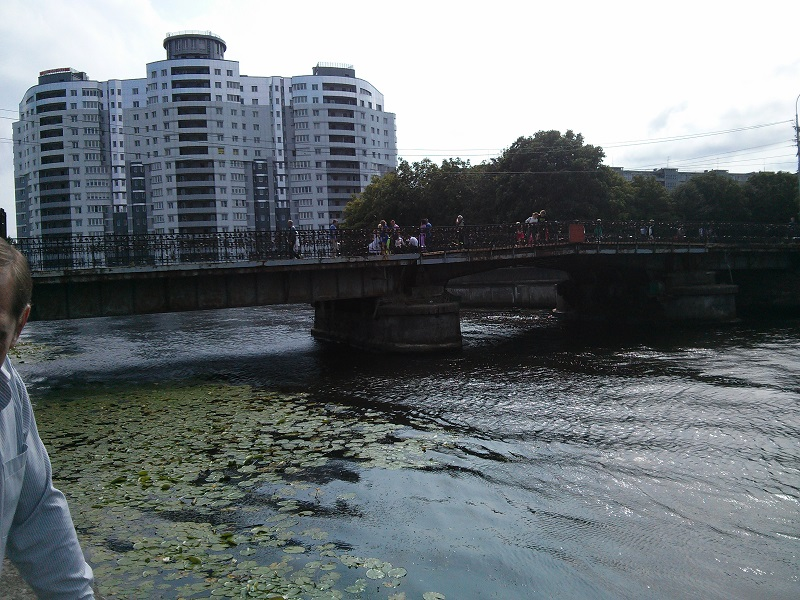
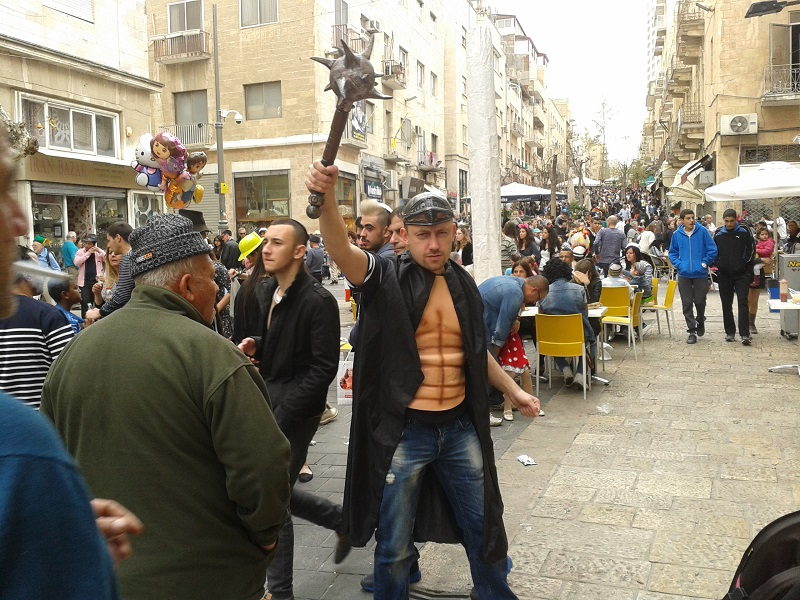
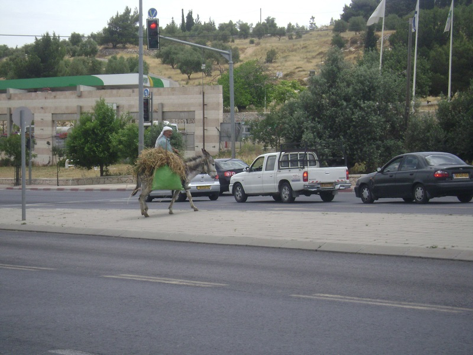
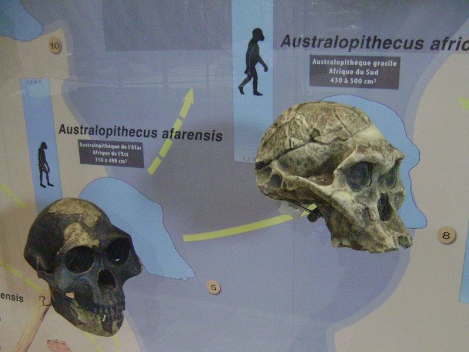
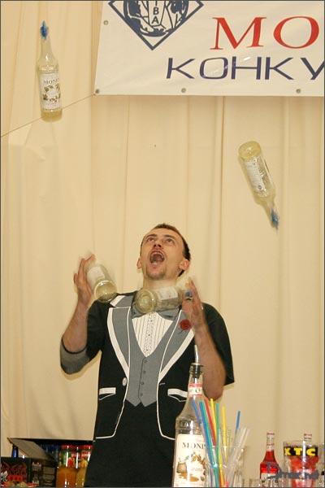
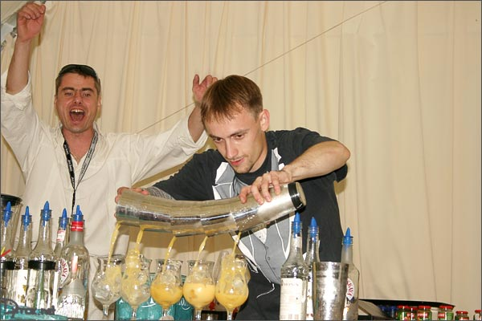

My name is Boris Maximenko.

Kazakhstan is famous for being the world's largest landlocked country and for having popular male names start with BOR.

https://en.wikipedia.org/wiki/Borat
When I was 14 my family moved to Königsberg, because it matches the same pattern (Capital K + 9 random characters) and because we like solving problems that involve bridges.

By the way this is one of them:

Back in 1999 I was an exchange student in the USA and attended Prairie High School. It's probably the best high school in Brush Prairie, WA

At the age of 23 I've moved to Jerusalem, because it's in a different time zone (and epoch).
{kind=link}


Since then I eat Kosher food if I can find it. Otherwise, I go into power saving mode.
I don't have a Mac at home, because Macs run on Darwin OS. This guy is not welcome in the Holy Land with his theories.

By the way the logo was borrowed too.
I have tried myself in different areas. Flipping bottles wasn't a huge success, because humans are not designed for concurrency.


Today I'm an Android engineer, because Android is the next big thing. Actually, it's the big thing next to me on the photo: